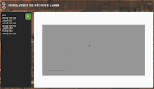

Accueil ¶
Un peu de NSI, un peu de SI, un peu de PIX : NSIX
Des cours et des outils utilisés au lycée Younoussa Bamana
Entraînement à la programmation en langage Python¶
 Améliorez vos compétences depuis n'importe où :
Améliorez vos compétences depuis n'importe où :
des exercices en ligne à faire chez-soi, en classe, sur la barge ou à la plage pour progresser où vous voulez, quand vous voulez : https://python.nsix.fr.
Pilotage de robots à distance¶
Pilotage à distance des robots utilisés au lycée. Il est possible d'essayer son code directement en ligne. Pour programmer et lancer l'exécution depuis un ordinateur ou un smartphone :
Simulateur de graveur laser¶
 Simulateur de graveur laser qui permet de tester du G-Code pour le pilotage d'un graveur laser. Déplacer et découper, à vous d'écrire ou de générer les commandes pour cette découpe.
Enquête SQL¶
A vous de mener l'enquête. Vous avez quelques indices, vous êtes malin, alors à vous de trouver qui se cache derrière cette lettre. Une base de données, des requêtes SQL : menez l'enquête.